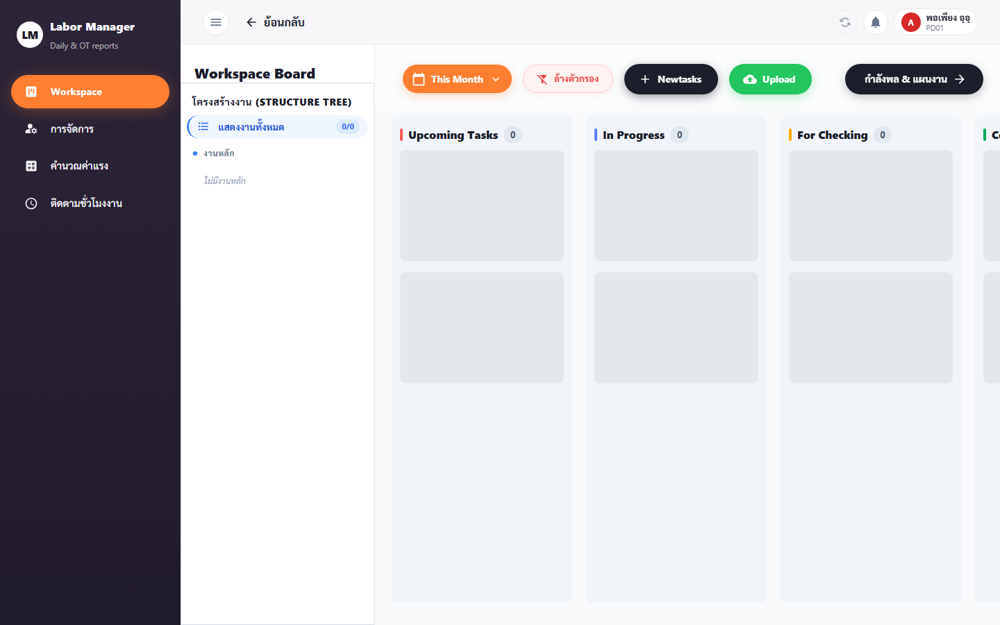
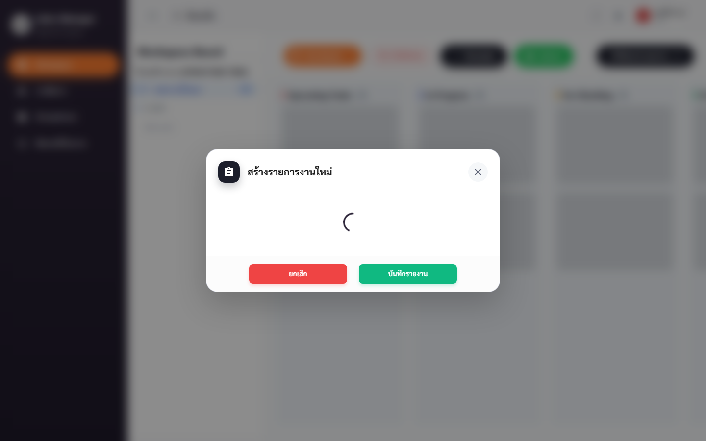
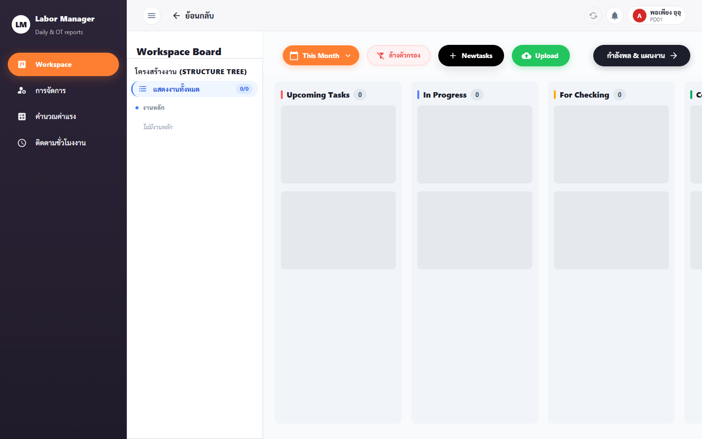
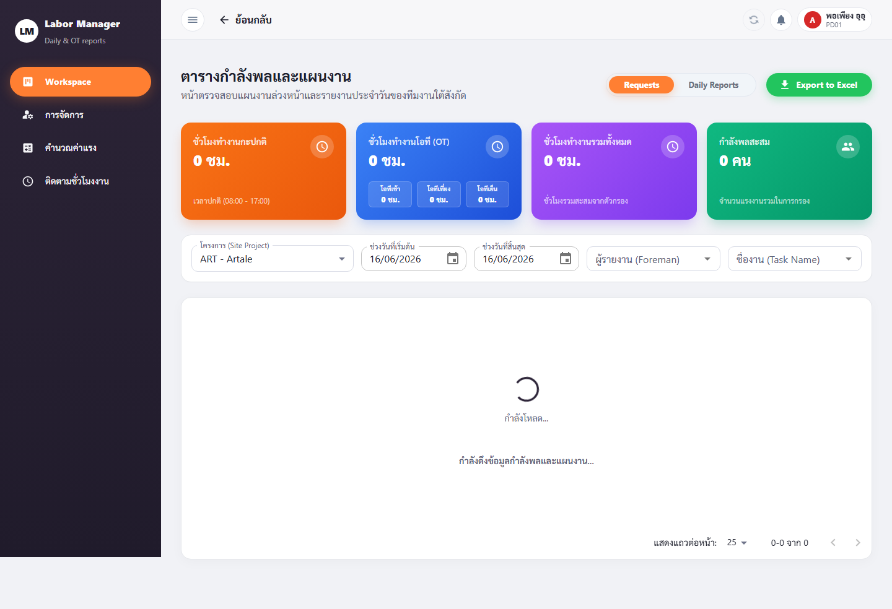
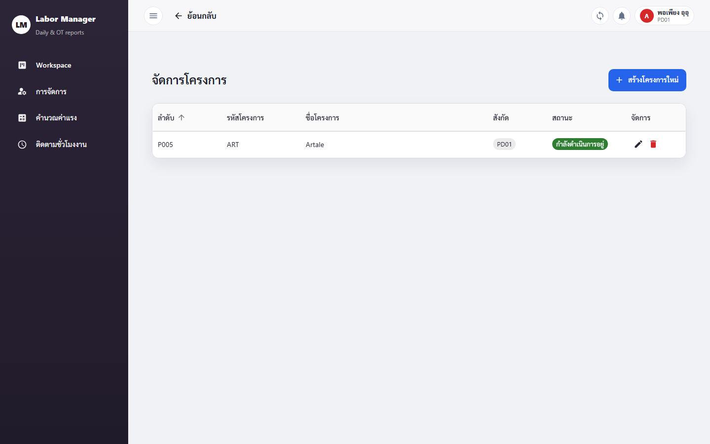
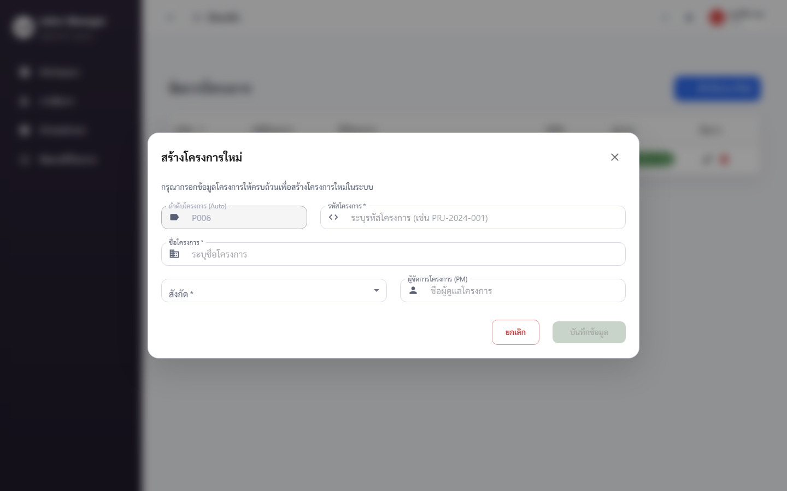

PM ทำอะไรได้บ้าง
PM (ผู้จัดการโครงการ) เป็นเจ้าของหลักของ Workspace (กระดานงาน), Activity Log (บันทึกกิจกรรม), Workspace · Requests (ตารางแรงงาน) และ Project Management (จัดการโครงการ)
ทางลัด: Workspace · Activity Log · Requests · Project Management
1 · Workspace (กระดานงาน)
หน้า /workspace — ใจกลางของการมอบหมายและติดตามงาน จัดเป็นลำดับชั้น:
หมวดหมู่งานหลัก → หมวดหมู่ย่อย → งานหลัก (Task) → งานย่อย (Subtask) และมี ใบสั่งงาน (Work Order)
1.1 เปิด Workspace และสลับมุมมอง
- คลิกเมนู "Workspace"
- สลับแท็บมุมมองงานได้: งานทั้งหมด / วันนี้ / สัปดาห์นี้ / เดือนนี้
- ใช้ตัวกรองด้านบนเพื่อกรองงาน · กด "รีเซ็ตตัวกรอง" เพื่อล้าง

1.2 สร้างหมวดหมู่งาน
- กดปุ่ม "เพิ่มหมวดหมู่งานหลัก"
- กรอก "ชื่อหมวดหมู่งานหลัก *" และ "รหัสหมวดหมู่งานหลัก (Code) *"
- ต้องการหมวดย่อย: กด "เพิ่มหมวดหมู่ย่อย" → กรอก "ชื่อหมวดหมู่ย่อย *"
- กด "บันทึก"
1.3 สร้างงาน (Task) และงานย่อย (Subtask)
- ในหมวดที่ต้องการ กดปุ่ม "เพิ่มงาน" (Quick Create)
- กรอก "ชื่องานหลัก *", เลือก "ผู้รับผิดชอบ *" และ "วันที่ครบกำหนด *"
- กด "บันทึก" → งานปรากฏบนกระดาน
- เพิ่มงานย่อย: เปิดงานหลัก → กด "เพิ่มงานย่อย" → กรอก "ชื่องานย่อย *", "ผู้รับผิดชอบ", "วันที่ครบกำหนด" → บันทึก

1.4 ใบสั่งงาน (Work Order)
- เปิดงานที่ต้องการ → ไปที่ส่วน "ใบสั่งงาน (Work Order)"
- กรอก "ผู้รับผิดชอบ *" และ "หัวหน้ากลุ่มงาน (Leader)"
- กด "บันทึก" เพื่อแก้ไข หรือไอคอน ลบ แล้วยืนยันเพื่อลบใบสั่งงาน

1.5 ดูประวัติงาน (History)
- ที่งานหรือใบสั่งงาน กด "ดูประวัติ"
- สลับแท็บได้ระหว่าง "รายงาน (report)" และ "การตั้งค่า (settings)" เพื่อดูการเปลี่ยนแปลงย้อนหลัง
2 · Activity Log (บันทึกกิจกรรมใน Workspace)
Activity Log อยู่ภายในหน้า Workspace — บันทึกว่า ใครทำอะไร เมื่อไหร่ ภายในเวิร์กสเปซ (เช่น สร้างงาน, แก้ใบสั่งงาน, ลบหมวดหมู่)
- ในหน้า Workspace เปิดแผง "Activity / กิจกรรม"
- ไล่ดูรายการกิจกรรมเรียงตามเวลา — เห็นชื่อผู้ทำและการกระทำ

3 · Workspace · Requests (ตารางแรงงานและแผนงาน)
หน้า /workspace/requests — ตารางแรงงานและแผนงาน (Labor & Plans Table)
สิทธิ์การเข้าถึงเหมือนหน้า Workspace ทุกประการ
- คลิกเมนู "Workspace" › "Requests"
- ดูตารางแรงงานเทียบกับแผนงานในแต่ละช่วงเวลา
- ปรับ/บันทึกแผนแรงงานตามสิทธิ์ของบทบาท

4 · Project Management (จัดการโครงการ)
หน้า /project-management — สร้างและแก้ไขโครงการ พร้อมกำหนดผู้จัดการโครงการ
4.1 ดูรายการโครงการ
- คลิกเมนู "จัดการโครงการ" — ระบบแสดงรายการโครงการทั้งหมด

4.2 สร้าง / แก้ไขโครงการ
- กดปุ่ม "เพิ่มโครงการ"
- กรอก "ชื่อโครงการ", "รหัสโครงการ", เลือก "สังกัด" และ "สถานะ"
- กำหนด "ผู้จัดการโครงการ (PM)" และ "รักษาการผู้จัดการโครงการ (PM)" (ถ้ามี)
- "ลำดับโครงการ" ระบบกำหนดให้อัตโนมัติ (Auto) หรือกรอกเองได้
- กด "บันทึก" · แก้ไขภายหลังได้จากไอคอนแก้ไขในแต่ละแถว
